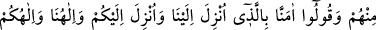
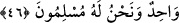

ibâdettir, O’ndan başkasını anmak tâat değildir.
Vaktini ağyârın zikriyle geçiren kimseye yazıklar olsun!
Hâfız der ki:
En güzel zaman, dostla geçirilen zamandır;
Gerisi hayırsız ve boştur
“Allah yaptıklarınızı bilir.” Yâni, zikir ve diğer ibâdetlerinizden haberdârdır, hiç bir
şey O’na gizli kalmaz. İşlediğiniz amellere en iyisi ile mukâbele eder ve karşılığını
verir.
Bazı büyükler der ki: Allah, bütün makam ve hallerde işlediklerinizi bilir. Kim
yaptığı şeyleri Allah’ın bildiğine yakînî olarak inanırsa, günahlardan ve kötülüklerden
kaçınır; ibâdet ve tâatlarla, özellikle de namazla sır ve hafî âlemlerine yönelir. Bütün
meşgûliyetlerden kalbi mutlaka arındırmak gerekir. Huzurla kılınan bir rekat namaz,
huzursuz kılınan bin rekat namazdan daha faziletli ve daha üstündür.
Nakledilmiştir ki: Bir kimse makbul bir namaz kılmak için Allah’a tazarru ve niyâzda
bulunuyordu. Acemî bir dostuyla namaz kıldı; kıraati sebebiyle namazının zâhiri hoşuna
gitmedi, yeniden namaza başladı. Rüyada bu kimseye şöyle denildi: “Allah seni, makbul
bir namaz kılmağa muvaffak etti, sen bunun değerini anlayamadın.” Dolayısıyla bâtını
ıslah etmek daha önemlidir. Çünkü bununla insanlar birbirlerinden üstün olurlar,
hasenâtları farklı farklı olur ve hakîkî kurtuluşa ererler. Bu hakîkî kurtuluş ise varlığı
zâtının iktizâsı olan Allah’ın varlığında, kulun kendi varlık hapsinden kurtulmasıyla
gerçekleşir.
Hakîkî âleme vâsıl olabilmek için şeriatın erkânını yerine getirip tarîkatın adâbına
devam karşılığında kendisine hazırlanan ecir ve sevâbı kul kavrayamaz; düşüncesi de
bu mükâfâtın kemâlini anlamağa kâfi gelmez. Ancak Allah, şerîatın anahtarını ve
tarîkatın san’atını kullanarak mecâzî varlık tılsımının kapılarını açmak ve hakîkî
varlıktan kenz-i hafîye ulaşmak için yaptığınız gayretleri bilir. Allah Teâlâ’dan
dileğimiz odur ki, bizleri güzel işlerde ve iyi amellerde muvaffak kılsın; en yüce
makamlara, bol ecir ve mükâfâtlara ulaştırsın.
46. İçlerinden zulmedenleri bir yana, ehl-i kitapla ancak en güzel yoldan
mücâdele edin ve deyin ki: Bize indirilene de, size indirilene de îman ettik. Bizim
Tanrımız da sizin Tanrınız da birdir ve biz O’na teslim olmuşuzdur.